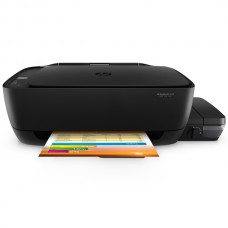

Добро пожаловать в наш интернет-магазин! Наша компания приветствует всех, кто зашёл на сайт!
МФУ струйное А4 HP DeskJet GT 5810
★★★★☆

Вес 5 кг
МФУ струйное HP DeskJet GT 5810 является компактным устройством, которое обязательно найдет свое применение в офисе или у вас дома. По-настоящему многофункциональная, данная модель обеспечивает термическую струйную печать с разрешением в черно-белом формате 1200х1200 dpi (4800х1200 dpi для цветной). Ежемесячно данное МФУ может обеспечить 800 страниц. МФУ струйное HP DeskJet GT 5810 оснащается планшетным сканером, копиром, рассчитанным на 9 копий за цикл. Модель работает с операционными системами Windows, Linux и Mac OS, возможна печать на различных типах бумажных носителей, в том числе конвертах и фотобумаге прозрачной пленке.
170$
Самовывоз:
г. МинскВремя работы:
пн-чт 08:00-17:00, перерыв
12:00-13:00